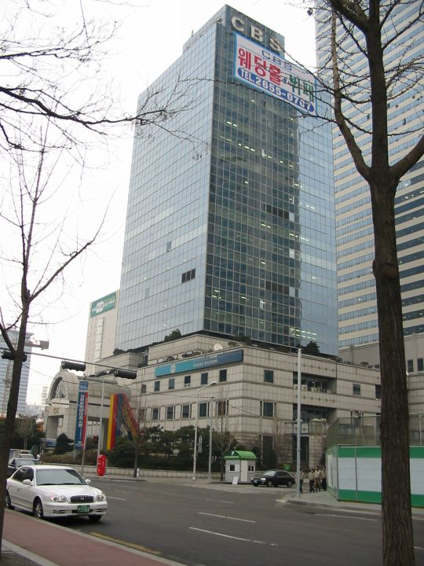
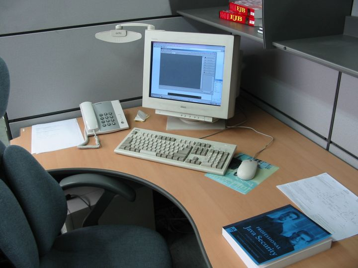
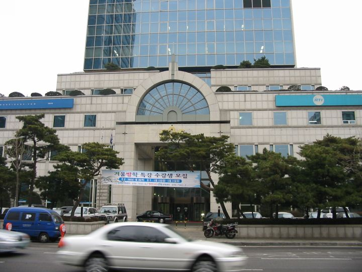
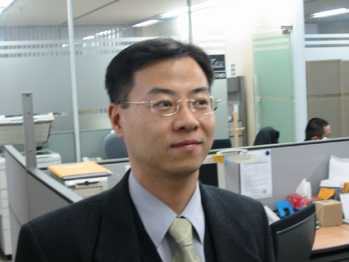
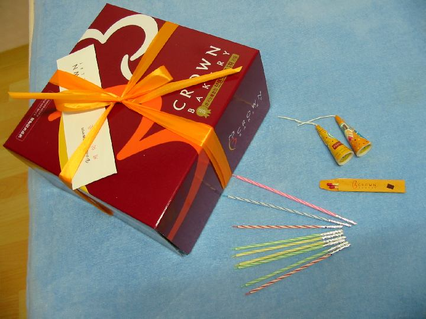

| Глебова работа |
|
| Первый рабочий день Глеба |
|
Мои домыслы и вымыслы, размышления и измышления :), или
 Поехал Глеб на работу к 8:45. Добираться ему туда оказалось ~40 минут, но он сказал, что долго ждал в метро. (Здесь поезда не как в Москве носятся через каждые тридцать секунд, нет. Тут довольно долго можно ждать. И пять минут, и дольше. А мы как-то с Глебом ждали, так во встречном направлении два поезда успело пройти, а мы всё стояли. :() Короче, довольно далеко, хотелось бы ближе, но в России и на час никто не жалуется, так чего же из-за получаса теперь выделываться? В тот же день на работе был ещё один новенький, кореец. С Глебом они никак не пересекаются, чем-то он другим занимается. Вот их вдвоём со всеми и знакомили... точнее, всех - с ними. :) Сначала было персональное знакомство с директором, потом уже все могли на них посмотреть, а директор толкнул какую-то длинную речь на корейском, наверное, о светлом будущем, и Глеб начал работать. Там ещё, видимо, три программиста (он три визитки принёс). Зовут их Ли Хьён-Су, Чон Чи-Вон и Чан Чун-Хван. И сказали они ему: зови нас, соответственно, Су, Чи и Чун. :)  Дали ему компьютер (что-то типа 700 МГц, 256М памяти и всё такое прочее... да, Глеб с собой наш винт брал, всякую информацию с него себе перекопировал, так тот комп при загрузке сказал, что "кто-то вскрывал корпус" :)) Весь день Глеб ставил и настраивал себе софт. :) Точнее, он, конечно, не весь день это делал, но других дел ему не дали. А вездесущий КСД и там сидит совсем недалеко от Глеба - через стенку. Уж не будут ли они перестукиваться? :) Дали Глебу е-мейл "от фирмы" gleb@filonet.com. Потом подумали, отобрали и решили дать gmazursky@filonet.com, но у них одна буква не влезла :), и тогда они дали адрес mazursky@filonet.com. Может, сегодня что-нибудь другое придумают? :) ....... ну точно, вот он сейчас читает и говорит: "Поменяли адрес на gmazursky@filonet.com". %) Работает там 5-6 кореянок. Пришёл вчера Глеб и рассказывает: "Все так себе, а вот одна - красивая. У всех глаза обычные ("- -"), а у неё ("\ /")... Но Кан Сок-Дон всё испортил. Увидел, что они заинтересовались, и сказал, что нечего заглядываться, у него жена есть." :) Вот ходил вчера весь "убитый горем". :)  А ещё была там лекция по интернет-технологиям, сами сотрудники готовят, Глеба тоже пригласили, он и пошёл, хотя там всё по-корейски. :) И ведь две кореянки-дизайнерки тоже пришли. Им-то зачем? >:-Е Не послушали они, видать КСД. :))) Днём все ходили обедать в ресторан поблизости. Судя по рассказам Глеба - очень большой, прямо-таки конвейер там организован: в "кассе" заказываешь и оплачиваешь обед и получаешь номер. Дальше ждёшь за столиком, когда на специальном мониторе твой номер покажут, что готово, потом идёшь и забираешь. :) В шесть часов заканчивается рабочий день. Но Глеб, имея опыт прошлой работы, был готов к тому, что тоже придётся задерживаться позже. Каково же было его удивление, когда КСД начал его практически выгонять сразу после 18! Глеб поинтересовался, как же так, во всех корейских фирмах принято задерживаться, а тут нет? На что КСД ответил, что вот такие они прогрессивные и современные, а он что же, недоволен? :) Так и пришлось Глебу вовремя домой идти. :) |
| Менеджер Кан Сок-Дон |
|
 В его обязанности входит взаимодействие с персоналом и помощь таким беспомощным, как мы. :) Поэтому долгое время он был единственным и главным человеком, с которым мы тут общались. По-английски он говорит, но понять его сложно. Корейцы не различают некоторых звуков, например, вместо "Ф" говорят "п", вместо "з" - что-то типа "дж" или "дч", не разберёшь. С другой стороны, мы тоже чего-то в корейском недослышим: недавно Глеб записал название блюда, а КСД (Кан Сок-Дон) его поправляет, дескать, там удвоенная "т". И произносит для сравнения как должно быть, и что Глеб понаписал, с комментарием, что "слышите же, какая разница!"... мы разницы не почувствовали ни малейшей. :) Так вот, по-английски он всё же говорит, и к этому даже можно привыкнуть и начать его понимать. Кстати, не думайте, что он сам всё понимает, что говоришь ему! Нет-нет. Как-то очень долго он не мог понять слово "cold", а всё дело в том, что звука "л" у них тоже нет, только "ль". Вот теперь Глеб ему всегда и говорит "кольд". :) И таких случаев масса. Вчера вот только Глеб пришёл с работы и пожаловался, что у них с КСД было какое-то небывалое "взаимонепонимание" :), так что пришлось переписываться на компьютере, чтобы как-нибудь выяснить все интересующие вопросы. КСД 35 лет, у него двое детей - сын и дочь. А ещё вот уже неделю как у него есть мы. :) На нас он тратит явно больше времени, чем на семью. Ну посудите сами: 27го около 12 или часа мы впервые увидели его сияющее улыбкой лицо. Расстались в этот день мы с ним только поздно вечером... вы же помните историю с несостоявшейся нашей квартирой? Поверьте, разговор с хозяевами был очень долгим делом! И ещё более долгим - процесс получения назад денег после расторжения договора. А потом он ещё и разместил нас в гостинице, подробно обговорив дальнейшие планы и убедившись, что нам там удобно. :) На следующий день у него юбилей свадьбы. Но он звонит нам, чтобы сказать, что квартиру он ищет, и даже несколько вариантов у него есть, так что вечером он поедет их смотреть, а 29го повезёт нас, так что утром мы должны быть готовы. На следующий день он забирает нас часов в 11 из гостиницы и мы едем выбирать квартиру и оформлять документы. То есть ещё полдня потрачено на нас. :) Думаю, что он ещё и в гостиницу бы нас после этого отвёз, но мы решили прогуляться в Техномарт. На 30е намечено переселение, так что утром КСД уже у нас в гостинице, помогает загружаться. Потом дооформляются документы, решаются почие вопросы, мы получаем ключи от квартиры. Нам выдают технику - плитку и холодильник, КСД переводит с подробным обсуждением условия договора по аренде квартиры (гвозди в стены не забивать, после 11 часов вечера не стирать и тому подобное). Вместе разбираемся, как пользоваться стиральной машиной. Он ещё сто раз переспрашивает, всё ли нам понятно и нет ли у нас вопросов. И пятидесятый раз напоминает Глебу, что он должен прийти второго января к 8:45 в офис, будет знакомство с фирмой. Естественно он убеждается, что Глеб знает, как туда добраться! И по карте должен показать нужную станцию метро и ту, где мы живём. И должен знать, что такое станция пересадки. :) Уффф... Думаете, на этом всё закончилось? Неееет. Мы же ещё в районе не ориентируемся! А ну как заблудимся? Деньги то что, зря плочены? ;) Так что он проводит нас по всему району, показывая, что и где искать. Потом спрашивает, как у нас обстоят дела с сотовым и тащит нас его покупать... на силу отбились. :) Сказали, что попозже купим, тут ещё нужно с кое-какими нюансами разобраться... короче, мы пока подождём. Попутно нам показана ближайшая станция метро. После чего КСД спрашивает, сможем ли мы вернуться домой. Я говорю, что конечно же да, чего тут даже сомневаться. Но, глядя на Глеба, его разбирают сомнения: не похож Глеб на того человека, который вернётся от метро домой. :) Поэтому срочно организуется эксперимент: мы идём сзади, Глеб впереди и он должен нас вывести к дому... Ага, хотя он не знает даже приблизительно, с какой стороны от нас сейчас этот самый дом находится. :-О Быстренько говорю ему, чтобы он смотрел, куда я глазами показываю, а то я спросила у КСД, могу ли я время от времени помогать Глебу, но тот сказал, что Глеб должен всё сделать сам. :) Так и идём: впереди - поминутно оглядывающийся на меня Глеб, сзади - мы с ничего не подозревающим корейцем. :) Один раз, помню, Глеб ощутимо обрадовался, увидев знакомую вывеску... Вывеска и правда весьма интересная: нарисована большая "7" и подписано "eleven" :) (для незнающих английский поясняю: подписано "одиннадцать")... Довела я так Глеба до последнего перекрёстка и стало мне смешно, да и кореец этак приуныл: не получилось повеселиться. Ну я и не показала Глебу, куда дальше поворачивать. :) И стоит Глеб совсем рядом с домом, а куда идти - не знает. Тут-то уж КСД порадовался, как уж он только Глебу не предлагал разные дороги... и заманил-таки на неправильную! :) Я, честно говоря, боялась, что так мы и пойдём по неправильной, пока Глеб сам не поймёт свою ошибку, но нет, КСД было достаточно того, что уже запутал Глеба, и показал правильную сторону. Потом ещё нам был предложен список блюд, которые мы сможем есть (не очень острые, Глеб попросил нас просветить) и мы были приглашены в ресторан. Ещё несколько раз напомнив когда, куда и во сколько Глеб должен прийти, КСД нас покинул... чтобы на следующее утро появиться у нас снова! :) Пощупал пол, поинтересовался, как мы тут, принёс карту этого района (без подробной карты очень плохо ориентироваться - в Корее же улицы без названий или номеров, так что дома пронумерованы внутри района! Мы видели номера больше 1000! :-О), на карте отмечены разные интересности. Поинтересовался нашими планами на этот день (31ое) и на следующий, дал некоторые советы... меня особенно порадовало: КСД: "Можете сходить ещё туда-то", Глеб: "А это интересно?", КСД: "По-моему - нет". :) Побеседовали мы часа полтора, потом КСД ещё несколько раз напомнил про второе число и ушёл... Вот как! Вот такой он, Кан Сок-Дон... |
| "Подарки" |
|
Сначала - небольшое вступление. Дело в том, что нам тут довольно многого не хватает. Точнее - больше всего мне. Вот, например, сегодня на ужин котлеты. А вы не пробовали делать котлеты без мясорубки и тёрки? Нет? А я вот уже попробовала. :) И так не хватает множества полезных мелочей. Но есть и крупные неудобства. К ним относится отсутствие одеяла. Укрываемся всем, что есть. "Всем" - не потому, что так холодно, а чтобы придать хоть какую-то прочность конструкции, поскольку моя "собака", например, очень скользкая и норовит упасть. А про мою фиолетовую куртку Глеб вообще сказал, что это - бесполезное недоразумение. :) Купить же всё неодходимое у нас пока не было возможности: до 30го мы жили в гостинице и не знали ещё, что нам понадобится (а то бы и в Омске запаслись - уж второй нож, тёрка и разделочная досочка нас бы не очень обременили), 30-го было переселение, 31-1 праздник, а второго Глеб уже ушёл на работу. Так что завтрашняя суббота, видимо, станет днём покупок. Конец вступления. Вчера приходит Глеб с работы и приносит кучу вещей: что-то - подарки, что-то - на время дали. Ессно, о нас позаботился... праааавильно, Кан Сок-Дон. :) И достались нам: одеяло (ура, ура, ура!), махровая простынь (которую мы используем как покрывало - я уж лучше обычную стирать буду... точнее, постирать не проблема, я вот в данный момент тоже стираю. Правда- правда! Сходила вниз, затолкала вещи в машинку, насыпала порошка, нажала кнопки, вернулась домой и теперь вот сижу, жду. Ах, мне ещё 22 минуты стирать. :) Так вот, выстирать легко - тяжело высушить. :( У нас сейчас уже так влажно, что я воду раза по три за день со стёкол стираю и всё равно рамы полные.)... так, про простынь я сказала... кстати, она голубенькая, с загадочной надписью: "International flag code for navigators" :). Ещё нам подарили "коврик, чтобы положить его перед душем". Мы поразмышляли тут, с какой стороны от двери его положить: хотелось бы внутри, но сырость... он же просыхать не будет! :( Пришлось положить в комнате. :) Ещё дали два полотенца махровых и подушку Глебу. :) На ней наволочка прикольная - на молнии. Правда, я посмотрела потом на других подушках в магазине - они все так делают: сразу с наволочкой, которая на молнии. Удобно. Ну и, наконец, дали нам сотовый. Точнее, мне дали. А то нет у нас, бедных... то есть у меня, бедной, телефона, не смогу даже мужу позвонить, пока он на работе. :) Сегодня Глеб мне уже звонил. И я ему (а то скажет, что я ничего полезного за день не узнала, а так я и по сотовому корейскому позвонила, звонок приняла, с машинкой стиральной разобралась... думаете, это легко?! Там же ни одной буквы рус... то есть, английской! Хорошо, тогда КСД помог, но пока сам не попробуешь - ничего не понятно). Хорошоооо нам теперь. :) |
| Ли Хьён-Су |
|
В Корее принято обзаводиться семьёй в возрасте 24-26 лет для женщин и 25-27 лет для мужчин. Те, кто "опаздывает" выглядят странно, окружающие сильно озабочены их судьбой, постоянно пристают с распросами и сочувствиями, очень часто даже директор фирмы, в которой работает несчастный(ая) счетает своим долгом принять участие в судьбе работника... вобщем, жизнь у таких людей тяжёлая. :) А теперь - ближе к теме. Ли Хьён-Су сейчас 29 лет, и учитывая то, что он не женат, легко догадаться, как он страдает последние два года. ;) А посему он настойчиво ищет спутницу жизни. Глебу об этом было сообщено в первый же рабочий день самим Су (косэн и всё такое... к тому же вдруг у Глеба есть запасная девушка, которой он поделится с товарищем... исключительно с серьёзными намерениями). Когда Су наконец-то отправился на свидание, об этом заранее была оповещена вся фирма. :) Думаю, что все озабочены его судьбой. К сожалению, с этой девушкой всё как-то не устроилось. :( И он опять в поисках. :) Даже сфотографирован Су был с его условием, что фотография будет показана русским девушкам: вдруг будущая счастливая жена живёт сейчас, ничего не подозревая о своём будущем счастьи, где-нибудь в России? Так что... ТРЕБУЕТСЯ ДЕВУШКА. :) Молодая, незамужняя, желательно - знающая английский (иначе как же вы будете переписываться и вообще общаться?!) или желающая быстро изучить корейский. ;) Да, исключительно с серьёзными намерениями. Все предложения будут переданы Су. Перспективы? Жить будете в столице Кореи - Сеуле. Кстати, исторически здесь не принято, чтобы женщины работали, с чем современные кореянки активно борются, но можно и подчиниться традициям - это нормально. Уметь готовить тоже не обязательно - большинство семей питаются в реторанах или заказывают еду на дом, но можно и удивить мужа своими хозяйственными способностями. :) Женщина должна украшать дом и растить детей. Вобщем, требований практически никаких, одни удовольствия. Разбирайте - второго шанса может и не быть! ;) P.S. для Ромы Р. Рома, прости! Но девушку найти намного
сложнее! Ты знаешь, каково мнение кореянок по поводу выбора мужа? "И та
женщина, что вышла замуж по любви, и та, что вышла замуж по расчёту, через
три или четыре года имеют одинаковые отношения со своими мужьями. Разница
лишь в том, что та, что хорошенько подумала, обычно может ходить в лучшие
универмаги, чем та, которая пошла на поводу у своих эмоций" (процитировано
по Ланькову - очень известному корееведу). Они все меркантильные! Зачем
тебе такая жена? Но если очень уж сюда хочешь, то меняй пол и забирай Су. :)
|
| Празднование дня Рождения Глеба на работе |
|
Ещё в четверг Сок-Дон напомнил, что у Глеба в субботу день Рождения, стало быть в пятницу (последний рабочий день на неделе) нужно бы отметить это событие... и добавил, что торт Сок-Дон ему подарит. :) Здесь принято, чтобы именинник приглашал сослужившев в ресторан за свой счёт. Глебу, конечно же, пришлось поступить согласно традиции. Правда, в ресторан пошла не вся фирма (к счастью :)), а только шесть человек, кроме самого Глеба. В ресторане у Глеба долго выспрашивали, что же он хочет получить в подарок, в результате сошлись на футболке. :) Так что пообедав, отправились за покупками. Покупали в Хёндаевском универмаге - там всё дорогое, вирменное и качественное. К тому же совсем рядом с местом работы. :) Самые обычные футболки на улице стоят примерно 2КW, здесь же цены доходили и до 70КW! :-О Глебу выбрали после продолжительных поисков и совещаний симпатичный "двуслойный" комплект: одна футболка одевается снизу, а вторая - поверх, за 60КW. А в конце рабочего дня Сок-Дон подарил обещанный тортик: стоило Глебу отлучиться на пару минут с рабочего места, как там образовалась коробка с оранжевой ленточкой. :)  Про торик хочется рассказать отдельно. Впечатляет забота о людях: коробка такая толстенная - из очень жёсткого картона, толщиной примерно в миллиметр (капитальная, короче, коробочка), сам тортик на не менее капитальной "тарелочке", так что не нужно бегать и раздумывать: "А на что же я его теперь поставлю" - просто вытаскиваешь на стол и всё, можно есть. :) К торту прилагались свечки в отдельном конвертике: я сначала не поняла, почему девять... %-О А потом заметила, что две - длиннее, то есть 2х10 + 7 лет!!! 8) Естественно, раз уж свечки приложили, то и спички тоже: "ну откуда рядовой кореец возьмёт спички?!" - сказал Глеб. :) Две спички в фирменном "коробочке" (просто бумажка склеенная вдвое, к которой приделано пятнышко для зажигания) - очень длинные и толстые (семь сантиметров длиной и почти 3 миллиметра толщиной): свечки же долго зажигать. 8) Естественно, нож в коробку тоже вложили: вдруг не дома есть придётся? Как же без ножа-то... Нож пластмассовый, очень длинный, чтобы удобно было. Ну и напоследок - две фирменные хлопушки. %)))) Вот мы разбирали это добро, и только удивлялись... как же у них всё предусмотрено, запланировано и подготовлено. О чём только они не позаботились... |
Первый рабочий день Глеба | Менеджер Кан Сок-Дон | "Подарки" | Ли Хьён-Су | Празднование дня Рождения Глеба на работе | НА ГЛАВНУЮ
{kind=link}
{kind=link}
{kind=link}
{kind=link}
{kind=link}
{kind=link}